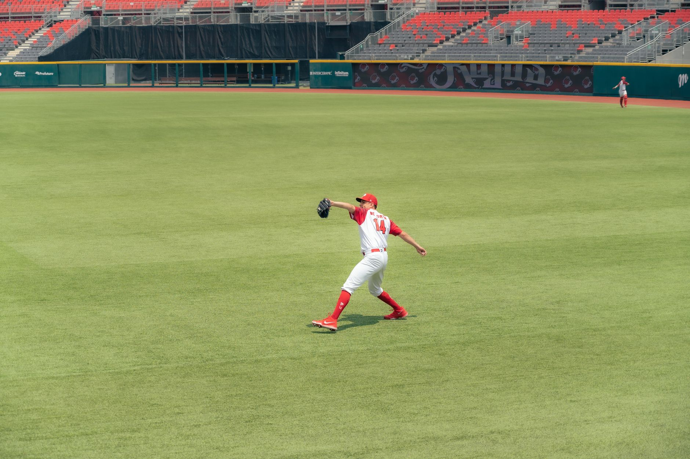

Understanding glove materials and construction
The foundation of any great glove is the leather. As we move into the 2026 season, manufacturers are focusing heavily on high-grade steerhide and kip leather. Steerhide is known for its durability and ability to withstand heavy use, making it ideal for players who spend many hours in the dirt. Kip leather, on the other hand, is much lighter and more refined, offering a faster response time for infielders who need quick transfers.
Beyond the leather, you must consider the internal padding and the web style. A well-constructed glove should feel substantial but not cumbersome. Look for reinforced stitching in high-stress areas to ensure your investment lasts more than just one season. The goal is to find a balance between a glove that is stiff enough to hold its shape and one that is supple enough to feel like an extension of your hand.
Choosing the right glove for your position
One of the biggest mistakes players make is trying to use a one-size-fits-all approach to their equipment. A shortstop requires a completely different tool than a first baseman. Infielders need smaller, shallower gloves that allow for rapid ball transfers and extreme dexterity. These gloves typically feature smaller pockets and lighter weights to facilitate quick movements around the bag.
Outfielders and catcher's need a different set of priorities. An outfielder needs a deep pocket and a larger circumference to secure long fly balls and prevent them from popping out. Catchers, meanwhile, require specialized mitts designed for impact absorption rather than catching and throwing. A catcher's mitt lacks the individual finger stalls found in standard gloves to provide a wider, more padded surface area.
A glove is not just equipment; it is a specialized tool tailored to the unique demands of your position on the diamond.
Sizing and fit considerations for all ages
Sizing is often measured in inches, referring to the length of the glove from the base of the fingers to the bottom of the palm. For youth players, smaller sizes between 9 and 11 inches are standard to ensure they can actually close the glove with one hand. As players grow, they transition into the 11.5 to 12.5-inch range, which is the sweet spot for most middle infielders.
Don't forget the importance of the hand opening. If the opening is too wide, the glove will feel loose and unreliable. If it is too tight, you will experience hand fatigue during long doubleheaders. A perfect fit should feel secure the moment you slide your hand in, requiring minimal break-in time to become functional.
The art of the break-in process
When you purchase the best baseball gloves 2026 has to offer, they will likely arrive quite stiff. This is a sign of quality leather, but it requires patience. A common mistake is using excessive oils or conditioners immediately. Over-oiling can actually soften the leather too much, causing the glove to lose its structural integrity and shape over time.
Instead, use a gradual approach. Start by catching soft tennis balls or using a glove mallet to gently reshape the pocket. You can also use a ball to 'form' the pocket by repeatedly catching easy grounders. This physical manipulation helps the leather fibers settle into a shape that matches your hand's natural movement.
Final tips for your 2026 season
As you prepare for the upcoming season, remember that your gear is only as good as your training. Even the most expensive professional glove won't help if your fundamentals are lacking. Once you have found your perfect match, make sure you are putting in the work on the field to master your fielding mechanics.
To truly elevate your game, you should complement your new equipment with a structured training plan. We highly recommend checking out our guide on Effective Baseball Workout Routines for Every Player at https://dhyey.bond/blog/effective-baseball-workout-routines-for-every-player/ to ensure you are physically prepared for the demands of the season.
Invest in quality, choose based on your specific needs, and practice relentlessly. If you do these three things, you will be ready to dominate the diamond in 2026.
See Also
If you enjoyed this Baseball Guide article, check out Effective Baseball Workout Routines for Every Player for more useful reading.